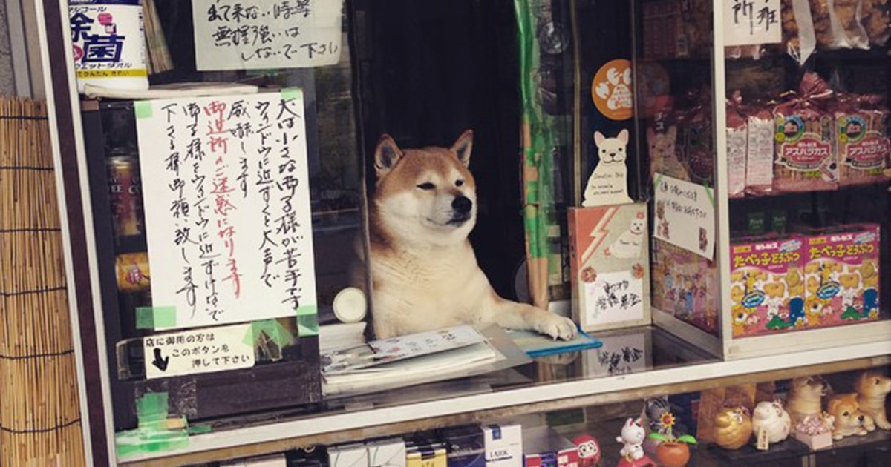

What you might need to know
Personality
These dogs are intelligent and independent, often displaying a strong-willed and sometimes stubborn nature. They may not always be eager to please, which can make training more challenging. Patience, consistency, and positive reinforcement are essential to help them learn and build trust with their owner.
Social Needs
While they can be reserved with strangers, they form deep bonds with their families. They may not constantly seek attention, but they still require regular interaction and companionship. Being left alone for extended periods can lead to boredom or stress, so a balanced routine of engagement is important.
Environment and Care
A secure living space is essential due to their curiosity and tendency to escape. They do best in environments where boundaries are well established. Although generally clean and low-odor, they shed heavily during seasonal coat changes, so regular grooming and maintenance should be expected.
Choose A Location
We currently have three locations in Arizona, please choose the location that you prefer.
Tribute To The Shopkeeper

In a quiet corner of Tokyo, a small convenience shop once became something extraordinary thanks to its most endearing “shopkeeper,” a Shiba Inu who greeted visitors from behind a sliding window with calm curiosity and charm. This beloved dog brought smiles to locals and people around the world, turning an ordinary storefront into a symbol of warmth and simple joy. Though he has now passed, his gentle presence and the happiness he shared continue to live on in the memories of those who encountered him, a reminder that even the smallest, everyday moments can leave a lasting impression.